Lévy Flight¶
Tutorial¶
Random walk distributions draw step sizes randomly from a given probability distribution function. The walk begins at a point and ‘steps’ to a new point in a random direction.
These types of distributions were invented by Benoît Mandelbrot. The Lévy flight distribution is a specific random walk distribution useful for creating fractal distribution which exhibits power law clustering.
2D vs 3D¶
In these example we will look only at Lévy flight distribution, first in 2D and then 3D. All other parameters are kept to their default values. We will explore what the other parameters do later.
2D¶
In this example we show how to generate a random walk distribution in 2D. Since the default setting is in 3D we will need to specify that we want this in 2D.
Before this we need to first import some basic modules for plotting and MiSTree itself.
import numpy as np
import matplotlib.pylab as plt
import mistree as mist
To generate a 2D Lévy flight sample, we will need to first specify how many points
we want in our random walk. This is given below by a parameter we call size.
Be careful with the size, if you make this too large, because of the periodic
boundary conditions, this will result in a distribution that is no different to a
random distribution!
size = 50000
x, y = mist.get_levy_flight(size, mode='2D')
This will give you a clustered distribution which looks like this:
plt.figure(figsize=(6., 6.))
plt.plot(x, y, 'o', markersize=1., alpha=0.1)
plt.xlabel(r'$X$')
plt.ylabel(r'$Y$')
plt.xlim(0., 75.)
plt.ylim(0., 75.)
plt.tight_layout()
plt.show()

3D¶
Creating a 3D distribution is even easier, since this is the default setting for
all the random walk functions. Like before we again specify the size and generate
the distribution in the following way:
size = 50000
x, y, z = mist.get_levy_flight(size)
We plot the 3 dimensions across 3 plains: X vs Y, X vs Z and Z vs Y:
import matplotlib.gridspec as gridspec
plt.figure(figsize=(10., 10.))
gs = gridspec.GridSpec(2, 2, hspace=0.05, wspace=0.05)
gs.update(left=0.075, right=0.975, top=0.975, bottom=0.075)
ax1 = plt.subplot(gs[2])
ax2 = plt.subplot(gs[3])
ax3 = plt.subplot(gs[0])
ax1.plot(x, y, 'o', markersize=1, alpha=0.1)
ax2.plot(z, y, 'o', markersize=1, alpha=0.1)
ax3.plot(x, z, 'o', markersize=1, alpha=0.1)
ax1.set_xlabel(r'$X$', fontsize=18)
ax1.set_ylabel(r'$Y$', fontsize=18)
ax2.set_xlabel(r'$Z$', fontsize=18)
ax3.set_ylabel(r'$Z$', fontsize=18)
ax2.set_yticks([])
ax3.set_xticks([])
ax1.set_xlim(0., 75.)
ax1.set_ylim(0., 75.)
ax2.set_xlim(0., 75.)
ax2.set_ylim(0., 75.)
ax3.set_xlim(0., 75.)
ax3.set_ylim(0., 75.)
plt.show()

Periodic boundary¶
All random walk distributions created by MiSTree have periodic boundary conditions
by default. This means that the box is repeated infinitely in all dimensions. This
is a common procedure used in N-Body simulations. When a particle steps out of the
boundary it actually re-enters the box from the other side. The size of the box can
be specified by setting the box_size in any of the Lévy flight functions.
size = 1000
# default box_size=75.
x, y, z = mist.get_levy_flight(size, box_size=75.)
# changing the box_size=100.
x, y, z = mist.get_levy_flight(size, box_size=100.)
However, if you want
to turn this off you will need to set periodic=False.
size = 1000
x, y = mist.get_levy_flight(size, mode='2D', periodic=False)
Which we plot as:
plt.figure(figsize=(6., 6.))
plt.plot(x, y, 'o', markersize=1., alpha=0.5)
plt.xlabel(r'$X$')
plt.ylabel(r'$Y$')
plt.tight_layout()
plt.show()

Random Walk Models¶
Random walk distributions can be made by one of the Lévy flight functions:
get_levy_flight or get_adjusted_levy_flight which creates a distribution
of Lévy flight and adjusted Lévy flight distributions, respectively. Both of
these functions interact with the function get_random_flight which can be used
to generate a random walk with your own specified probability distribution function
(PDF). Below we will explain in detail how these distributions work and what the
parameters do in each model.
Lévy Flight¶
Lévy flights are defined with a power law PDF and a cumulative distribution function (CDF) given by,
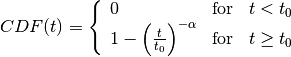
Where:
– step sizes
– minimum step size.
– defines the slope of power law.
The PDF for the Lévy flight is given by,
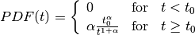
If we are to change , which is the minimum step length, to shorter
values this results in there being a higher probability of smaller step sizes.

We now generate a set of realisations with these parameters.
size = 50000 # how many particles in the distribution
x1, y1 = mist.get_levy_flight(size, t_0=0.01, alpha=1.5, mode='2D')
x2, y2 = mist.get_levy_flight(size, t_0=0.1, alpha=1.5, mode='2D')
x3, y3 = mist.get_levy_flight(size, t_0=1., alpha=1.5, mode='2D')
which are plotted:
plt.figure(figsize=(15., 5.))
gs = gridspec.GridSpec(1, 3, hspace=0.025)
gs.update(left=0.05, right=0.95, top=0.925, bottom=0.125)
ax1 = plt.subplot(gs[0])
ax2 = plt.subplot(gs[1])
ax3 = plt.subplot(gs[2])
ax1.plot(x1, y1, 'o', markersize=1, alpha=0.1)
ax2.plot(x2, y2, 'o', markersize=1, alpha=0.1)
ax3.plot(x3, y3, 'o', markersize=1, alpha=0.1)
ax1.set_xlabel(r'$X$', fontsize=18)
ax1.set_ylabel(r'$Y$', fontsize=18)
ax2.set_xlabel(r'$X$', fontsize=18)
ax3.set_xlabel(r'$X$', fontsize=18)
ax2.set_yticks([])
ax3.set_yticks([])
ax1.set_xlim(0., 75.)
ax1.set_ylim(0., 75.)
ax2.set_xlim(0., 75.)
ax2.set_ylim(0., 75.)
ax3.set_xlim(0., 75.)
ax3.set_ylim(0., 75.)
ax1.set_title(r'$t_{0}=0.01$')
ax2.set_title(r'$t_{0}=0.1$')
ax3.set_title(r'$t_{0}=1.$')
plt.show()
{kind=link}
If we instead vary this changes the gradient of the slope.

We now generate a set of realisations with these parameters.
size = 50000 # how many particles in the distribution
x1, y1 = mist.get_levy_flight(size, t_0=0.1, alpha=1., mode='2D')
x2, y2 = mist.get_levy_flight(size, t_0=0.1, alpha=1.5, mode='2D')
x3, y3 = mist.get_levy_flight(size, t_0=0.1, alpha=2., mode='2D')
Which we then plot:
plt.figure(figsize=(15., 5.))
gs = gridspec.GridSpec(1, 3, hspace=0.025)
gs.update(left=0.05, right=0.95, top=0.925, bottom=0.125)
ax1 = plt.subplot(gs[0])
ax2 = plt.subplot(gs[1])
ax3 = plt.subplot(gs[2])
ax1.plot(x1, y1, 'o', markersize=1, alpha=0.1)
ax2.plot(x2, y2, 'o', markersize=1, alpha=0.1)
ax3.plot(x3, y3, 'o', markersize=1, alpha=0.1)
ax1.set_xlabel(r'$X$', fontsize=18)
ax1.set_ylabel(r'$Y$', fontsize=18)
ax2.set_xlabel(r'$X$', fontsize=18)
ax3.set_xlabel(r'$X$', fontsize=18)
ax2.set_yticks([])
ax3.set_yticks([])
ax1.set_xlim(0., 75.)
ax1.set_ylim(0., 75.)
ax2.set_xlim(0., 75.)
ax2.set_ylim(0., 75.)
ax3.set_xlim(0., 75.)
ax3.set_ylim(0., 75.)
ax1.set_title(r'$\alpha=1$')
ax2.set_title(r'$\alpha=1.5$')
ax3.set_title(r'$\alpha=2$')
plt.show()

These two parameters can both be changed to affect the amount of clustering. But since
is directly related to the two point correlation function it is often
considered to be the more important parameter.
Adjusted Lévy Flight¶
We developed a move flexible Lévy flight model to better deal with small scales.
Normal Lévy flight distributions are able to produce power law 2PCF, however below
the 2PCF plateaus. To be able to control what happens below this scale
we instead use a Lévy flight model which has a CDF:
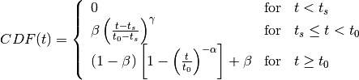
which we call the adjusted Levy flight, where and
play the same role as they do in the normal Lévy flight distribution. The CDF
is built of two CDFs: (1) the normal Lévy flight part which operates for step sizes
larger than and (2) the adjusted part operates between step sizes
 and where
and where  . Unlike the normal
Lévy flight distribution, which transitions from a 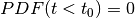 to a
peak at 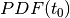 the adjusted Lévy flight had a gradual rise in between
and . The other parameters have the following roles:
. Unlike the normal
Lévy flight distribution, which transitions from a 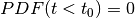 to a
peak at 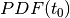 the adjusted Lévy flight had a gradual rise in between
and . The other parameters have the following roles:
– the fraction of steps between
– defines the gradient of the rise.
The PDF is thus defined as:
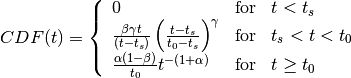
Below we show what happens to the CDF of the adjusted Lévy flight distribution if we vary these parameters individually whilst keeping all other parameters constant.

Other Random Walk¶
To create a flight distribution with a user defined step size distribution. You will
need to first generate a distribution of step sizes. To do this you will need to
invert the CDF of the distribution. Once you have a distribution of step sizes
you can pass this to the get_random_flight function.
We will step you through how to do this using a step size distribution which follows a log normal distribution.
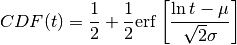
To generate a random log normal distribution we invert this function giving us:
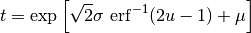
Where 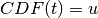. Here, u is a randomly drawn number between 0 and 1.
We can generate this in the following way:
import numpy as np
import matplotlib.pylab as plt
from scipy.special import erfinv
import mistree as mist
size = 50000
u = np.random.random_sample(size)
mu = 0.1
sigma = 0.05
steps = np.exp(np.sqrt(2.)*sigma*erfinv(2.*u-1.)+mu)
x, y = mist.get_random_flight(steps, mode='2D', box_size=75., periodic=True)
plt.figure(figsize=(7., 7.))
plt.plot(x, y, 'o', markersize=1., alpha=0.25)
plt.xlabel(r'$X$', fontsize=18)
plt.ylabel(r'$Y$', fontsize=18)
plt.xlim(0., 75.)
plt.ylim(0., 75.)
plt.tight_layout()
plt.show()

Functions¶
Indepth documentation on the functions to generate Lévy Flight-like simulations are provided below.
-
get_random_flight(steps[, mode='3D', box_size=75., periodic=True])¶ Generates a random realisation of a ‘Levy flight’-like distribution. The random step step sizes are defined by the user.
Parameters: - steps (array) – Distribution of step sizes defines by the user.
- mode (str) – ‘2D’ or ‘3D’ – Defines whether the distribution is defined in 2D or 3D cartesian coordinates.
- box_size (float) – Length of the periodic box across one axis.
- periodic (bool) – If
Truethen this sets periodic boundary condition on the Lévy flight realisation. IfFalse, the box_size parameter is ignored.
Returns: x, y, z (array) – Distribution of random walk particles. z is only outputted if this is a 3D distribution.
-
get_levy_flight(size[, periodic=True, box_size=75., t_0=0.2, alpha=1.5, mode='3D'])¶ Generates a random realisation of a Levy flight distribution.
Parameters: - size (int) – Number of points.
- mode (str) – ‘2D’ or ‘3D’ – Defines whether the distribution is defined in 2D or 3D cartesian coordinates.
- box_size (float) – Length of the periodic box across one axis.
- periodic (bool) – If
Truethen this sets periodic boundary condition on the Lévy flight realisation. IfFalse, the box_size parameter is ignored. - t_0 (float) – Levy flight parameter, minimum step size.
- alpha (float) – Levy flight parameter, step size power law slope.
Returns: x, y, z (array) – Distribution of Levy flight particles. z is only outputted if this is a 3D distribution.
-
get_adjusted_levy_flight(size[, mode='3D', periodic=True, box_size=75., t_0=0.325, t_s=0.015, alpha=1.5, beta=0.45, gamma=1.3])¶ Generates a random realisation of an adjusted Levy flight (ALF) distribution.
Parameters: - size (int) – Number of points.
- mode (str) – ‘2D’ or ‘3D’ – Defines whether the distribution is defined in 2D or 3D cartesian coordinates.
- box_size (float) – Length of the periodic box across one axis.
- periodic (bool) – If
Truethen this sets periodic boundary condition on the Lévy flight realisation. IfFalse, the box_size parameter is ignored. - t_0 (float) – ALF parameter, minimum step size for Levy flight component.
- alpha (float) – ALF parameter, step size power law slope.
- t_s (float) – ALF parameter, minimum step size for adjusted component.
- beta (float) – ALF parameter, fraction of steps below
t_0. - gamma (float) – ALF parameter, the gradient for the slow rise of the ALF’s cumulative distribution function.
Returns: x, y, z (array) – Distribution of adjusted Levy flight particles. z is only outputted if this is a 3D distribution.